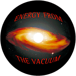

| The Tom Bearden Website
|
 |
|
Subject: RE: Edward Leedskalnin & Magnetic Current Date: Thu, 7 Dec 2006 12:22:47 -0600
Hi Chris, I did look at Coral castle some years ago, and concluded that -- given statements by good observers -- he had to involve negative EM energy, to produce antigravity. For a paper showing a successful production of antigravity using negative energy output of the Sweet VTA, see Floyd Sweet and T. E. Bearden, "Utilizing Scalar Electromagnetics to Tap Vacuum Energy," Proc. 26th Intersociety Energy Conversion Engineering Conference (IECEC '91), Boston, Massachusetts, 1991, p. 370-375. The weight of the unit was steadily and smoothly reduced via antigravity, until it had lost 90% of its weight on the scales. There has been lots of work in negative energy, but mostly in highly classified secret projects in multiple nations. At least five nations have negative energy EMP weapons, which are the second most powerful weapons on earth. Some good work on negative energy has been done in the open literature by Solomon and his colleagues. E.g., see
You can get negative energy fairly easily, by using sharp field gradients (pulse gradients). In the small space of the pulsed region, electrons are popped out of the Dirac sea, leaving behind the empty Dirac sea holes. The rush of electrons is often called the "Lenz law" effect. Dirac emasculated the holes (which are negative mass energy electrons, which are the dark matter our astrophysicists are so avidly seeking), and stripped them of their negative energy fields (which are the dark energy our astrophysicists are so avidly seeking). If you add back the arbitrarily stripped off fields, then from its moment of formation a Dirac sea hole is emitting negative energy photons at light speed, forming its associated negative energy fields. Tesla originally ran across negative energy, but called it "radiant energy". Bedini has been using "radiant" (negative) EM energy in his patented battery charging processes for nearly two decades. Negative energy charges batteries (connect them backwards) with remarkable ease, erasing much of the damage previously done to the battery, etc. The COP is easily COP = 4.0 to 5.0, or even higher. For the peculiar working and use of negative energy EM and negative energy currents in circuits and systems, see the several end paragraphs on it that are in "Negative Impedance: What It is and How It Works," available at http://www.cheniere.org/correspondence/091206.htm . The same paper discusses precisely when and how the conservation of energy law is violated (when the Killing vector symmetry does not hold), and also the thermodynamics, including the fact that the hoary old second law of equilibrium thermodynamics can be violated at will. Hope this helps. Best wishes,
Tom Bearden From: Chris Subject: Edward Leedskalnin & Magnetic Current Date: Thu, 7 Dec 2006 02:11:28 -0500 I have just finished watching an interview with Tom Bearden where he details many of Nikola Tesla's inventions and contributions to science. What caught my attention was how he mentioned that current EM theory is wrong and that there is a dual nature to the waves. This seems very much in line with what Ed Leedskalnin wrote about in his book "Magnetic Current". Ed also stated that the current EM theory was wrong and that there existed two "positive" and "negative" magnetic currents in nature and their actions could be used to explain all phenomenon. I'm just wondering if Tom has had the chance to look at that material because there seems to be a bit of a correlation there. Leedskalnin is long dead but his main accomplishment, Coral Castle, still stands and is a mystery to this day. Currently, there is a man, Jon De'Pew, who seems to have decoded some of Leedskalnin's theories and applied them today to produce something he calls an "Equilibrius". The videos of this show an array of magnetic "tops" spinning in place perpetually. Videos of this can be seen here: http://www.coralcastlecode.com/id21.html and I encourage Tom to explore a bit more of that site as well. If I could get his thoughts on this, or if he could publish them on the website, I would be most interested in reading them. I'm sure many other people would be as well. I am new to Tom's site, I was referred there through Jordan Maxwell's site http://www.jordanmaxwell.com/, and I plan on fully exploring Tom's works. I look forward to your reply. Chris |